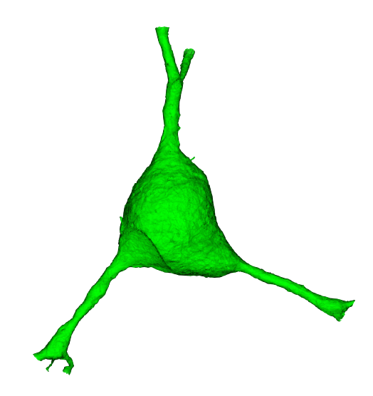

from caveclient import CAVEclient
from cloudvolume import CloudVolume
datastack_name = 'minnie65_public'
client = CAVEclient(datastack_name)Download Meshes
Connected morphological representations: meshes
When trying to understand the fine 3d morphology of a neuron (e.g. features under 1 micron in scale), meshes are a particularly useful representation.More precisely, a mesh is a collection of vertices and faces that define a 3d surface.
The meshes that one sees in Neuroglancer are available to download through the python client cloud-volume, and can be loaded for analysis and visualization in other tools.
The MICrONS data can be representing and rendered in multiple formats, at different levels of abstraction from the original imagery.


What is a mesh?
A mesh is a set of vertices connected via triangular faces to form a 3 dimensional representation of the outer membrane of a neuron, glia or nucleus.
Meshes can either be static or dynamic:
Static:
- pros: smaller files thus easier to work with, multiple levels of detail (lod) which can be accessed (example below)
- cons: may include false gaps and merges from self contacts, updated less frequently
Example path: precomputed://gs://iarpa_microns/minnie/minnie65/seg_m1300
Dynamic:
- pros: highly detailed thus more reflective of biological reality and backed by proofreading infrastructure CAVE (Connectome Annotation Versioning Engine)
- cons: much larger files, only one level of detail
Example path: graphene://https://minnie.microns-daf.com/segmentation/table/minnie65_public
Cloud-Volume for downloading meshes
CloudVolume is a serverless Python client for random access reading and writing of Neuroglancer volumes in “Precomputed” format, a set of representations for arbitrarily large volumetric images, meshes, and skeletons.
Precomputed volumes are typically stored on AWS S3, Google Storage, or locally. CloudVolume can read and write to these object storage providers given a service account token with appropriate permissions. However, these volumes can be stored on any service, including an ordinary webserver or local filesystem, that supports key-value access.
cloud-volume is the mechanism for many programmatic data queries, and integrates heavily with the CAVE ecosystem but is distinct. You can install cloud-volume with:
pip install cloud-volumeThe Connectome Annotation Versioning Engine (CAVE) is a suite of tools developed at the Allen Institute and Seung Lab to manage large connectomics data.
Initial Setup
Before using any programmatic access to the data, you first need to set up your CAVEclient token. When CAVEclient saves the token to your local machine, cloudvolume will access the same token.
The datastack includes information about the segmentation source, and can provide that information when prompted
client.info.segmentation_source()'graphene://https://minnie.microns-daf.com/segmentation/table/minnie65_public'Note that this is the same as the dynamic segmentation path above
# this can be used to initialize a cloudvolume object
cv = CloudVolume(client.info.segmentation_source(), progress=False, use_https=True)Examples from the cloudvolume README:
cv.mesh.get(12345) # return the mesh as vertices and faces instead of writing to disk
cv.mesh.get([ 12345, 12346 ]) # return these two segids fused into a single mesh
cv.mesh.get([ 12345, 12346 ], fuse=False) # return { 12345: mesh, 12346: mesh }Download dynamic mesh
Given a root_id, CloudVolume can be used to retrieve the mesh. cloudvolume.mesh.get() returns a dictionary with the neuron segment id as the key and the mesh as the value
# specify the materialization version, for consistency across time",
client.version = 1300
# Example: pyramidal cell in v1300
example_cell_id = 864691135572530981
%time mesh = cv.mesh.get(example_cell_id)[example_cell_id]Warning: deduplication not currently supported for this layer's variable layered draco meshes
CPU times: total: 48 s
Wall time: 1min 2sDownload static mesh
The meshes that are available in the visualization on microns-explorer.org are fast to load because they are static and have been downsampled at multiple resolutions. However, this comes with the drawback of being less biologically accurate.
Level of detail is controlled with optional argument, where lod=0 is the highest level of detail
we can access one of these downsampled static meshes by setting the path here:
cv = CloudVolume("precomputed://gs://iarpa_microns/minnie/minnie65/seg_m1300", use_https=True)# the cloud volume interface is the same but it is a faster initial download
%time mesh = cv.mesh.get(example_cell_id, lod=3)[example_cell_id]CPU times: total: 78.1 ms
Wall time: 1.19 s# as you can see the meshes aren't exactly the same as before. They because they have not been downsampled
mesh.vertices.shape, mesh.faces.shape((56938, 3), (99936, 3))In addition, the Static meshes are available in 3 levels of detail, this covers two orders of magnitude of detail which is what neuroglancer leverages to efficiently load the data at the resolution necessary to render the current scene.
for lod in range(4):
mesh = mesh = cv.mesh.get(example_cell_id, lod=lod)[example_cell_id]
print(f"level of detail {lod}: n_verts: {mesh.vertices.shape[0]} n_faces: {mesh.faces.shape[0]}")level of detail 0: n_verts: 5231141 n_faces: 10291430level of detail 1: n_verts: 1457607 n_faces: 2828410level of detail 2: n_verts: 253583 n_faces: 474769level of detail 3: n_verts: 56938 n_faces: 99936The returned mesh includes: * vertices : Nx3 [x, y, z] positions in nm * faces: Kx3 [i, j, k] indices into vertices that describe the triangular meshes
MeshParty for processing mesh objects
The Meshparty, which is a python package to work with meshes, designed around use cases for analyzing neuronal morphology.
pip install meshpartyThe MeshParty object has more useful properties and attributes such as: * a scipy.csgraph sparse graph object (mesh.csgraph) * a networkx graph object (mesh.nxgraph)
Read more about what you can do with MeshParty on its Documentation.
In particular it lets you associate skeletons, and annotations onto the mesh into a “meshwork” object.
import os
from meshparty import trimesh_io
from caveclient import CAVEclient
client = CAVEclient('minnie65_public')
mm = trimesh_io.MeshMeta(
cv_path=client.info.segmentation_source(),
disk_cache_path="meshes",
)
example_cell_id = 864691135572530981
mesh = mm.mesh(seg_id=example_cell_id)Warning: deduplication not currently supported for this layer's variable layered draco meshesOne convenience of using the MeshMeta approach is that if you have already downloaded a mesh for with a given root id, it will be loaded from disk rather than re-downloaded.
If you have to download many meshes, it is somewhat faster to use the bulk download_meshes function and use multiple threads via the n_threads argument. If you download them to the same folder used for the MeshMeta object, they can be loaded through the same interface.
root_ids = [864691135572530981, 864691135014128278, 864691134940133219]
mm = trimesh_io.download_meshes(
seg_ids=root_ids,
target_dir='meshes',
cv_path=client.info.segmentation_source(),
n_threads=4, # Or whatever value you choose above one but less than the number of cores on your computer
)
File size
Meshes can be hundresds of megabytes in size, so be careful about downloading too many if the internet is not acting well or your computer doesn’t have much disk space!
Healing Mesh Gaps

Many meshes are not actually fully continuous due to small gaps in the segmentation. However, information collected during proofreading allows one to partially repair these gaps by adding in links where the segmentation was merged across a small gap. If you are just visualizaing a mesh, these gaps are not a problem, but if you want to do analysis on the mesh, you will want to heal these gaps. Conveniently, there’s a function to do this:
mesh.add_link_edges(
seg_id=example_cell_id, # This needs to be the same as the root id used to download the mesh
client=client.chunkedgraph,
)Properties
Meshes have a large number of properties, many of which come from being based on the Trimesh library’s mesh format, and others being specific to MeshParty.
Several of the most important properties are:
mesh.vertices: AnN x 3list of vertices and their 3d location in nanometers, whereNis the number of vertices.mesh.faces: AnP x 3list of integers, with each row specifying a triangle of connected vertex indices.mesh.edges: AnM x 2list of integers, with each row specifying a pair of connected vertex indices based off of faces.mesh.edges: AnM x 2list of integers, with each row specifying a pair of connected vertex indices based off of faces.mesh.link_edges: AnM_l x 2list of integers, with each row specifying a pair of “link edges” that were used to heal gaps based on proofreading edits.mesh.graph_edges: An(M+M_l) x 2list of integers, with each row specifying a pair of graph edges, which is the collection of bothmesh.edgesandmesh.link_edges.mesh.csgraph: A Scipy Compressed Sparse Graph representation of the mesh as anNxNgraph of vertices connected to one another using graph edges and with edge weights being the distance between vertices. This is particularly useful for computing shortest paths between vertices.
Warning
MICrONs meshes are not generally “watertight”, a property that would enable a number of properties to be computed natively by Trimesh. Because of this, Trimesh-computed properties relating to solid forms or volumes like mesh.volume or mesh.center_mass do not have sensible values and other approaches should be taken. Unfortunately, because of the Trimesh implementation of these properties it is up to the user to be aware of this issue.
Visualization
There are a variety of tools for visualizing meshes in python. MeshParty interfaces with VTK, a powerful but complex data visualization library that does not always work well in python. The basic pattern for MeshParty’s VTK integration is to create one or more “actors” from the data, and then pass those to a renderer that can be displayed in an interactive approach. The following code snippet shows how to visualize a mesh using this approach.
mesh_actor = trimesh_vtk.mesh_actor(
mesh,
color=(1,0,0),
opacity=0.5,
)
trimesh_vtk.render_actors([mesh_actor])Note that by default, neurons will appear upside down because the coordinate system of the dataset has the y-axis value increasing along the “downward” pia to white matter axis.
More documentation on the MeshParty VTK visualization can be found here.
Other tools worth exploring are:
Masking
One of the most common operations on meshes is to mask them to a particular region of interest. This can be done by “masking” the mesh with a boolean array of length N where N is the number of vertices in the mesh, with True where the vertex should be kept and False where it should be omitted. There are several convenience functions to generate common masks in the Mesh Filters module.
In the following example, we will first mask out all vertices that aren’t part of the largest connected component of the mesh (i.e. get rid of floating vertices that might arise due to internal surfaces) and then mask out all vertices that are more than 20,000 nm away from the soma center.
from meshparty import mesh_filters
root_id =864691134940133219
root_point = client.materialize.tables.nucleus_detection_v0(pt_root_id=root_id).query()['pt_position'].values[0] * [4,4,40] # Convert the nucleus location from voxels to nanometers via the data resolution.
mesh = mm.mesh(seg_id=root_id)
# Heal gaps in the mesh
mesh.add_link_edges(
seg_id=864691134940133219,
client=client.chunkedgraph,
)
# Generate and use the largest component mask
comp_mask = mesh_filters.filter_largest_component(mesh)
mask_filt = mesh.apply_mask(comp_mask)
soma_mask = mesh_filters.filter_spatial_distance_from_points(
mask_filt,
root_point,
20_000, # Note that this is in nanometers
)
mesh_soma = mesh.apply_mask(soma_mask)This resulting mesh is just a small cutout around the soma. 